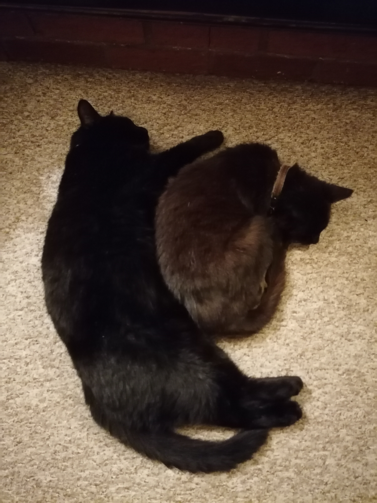
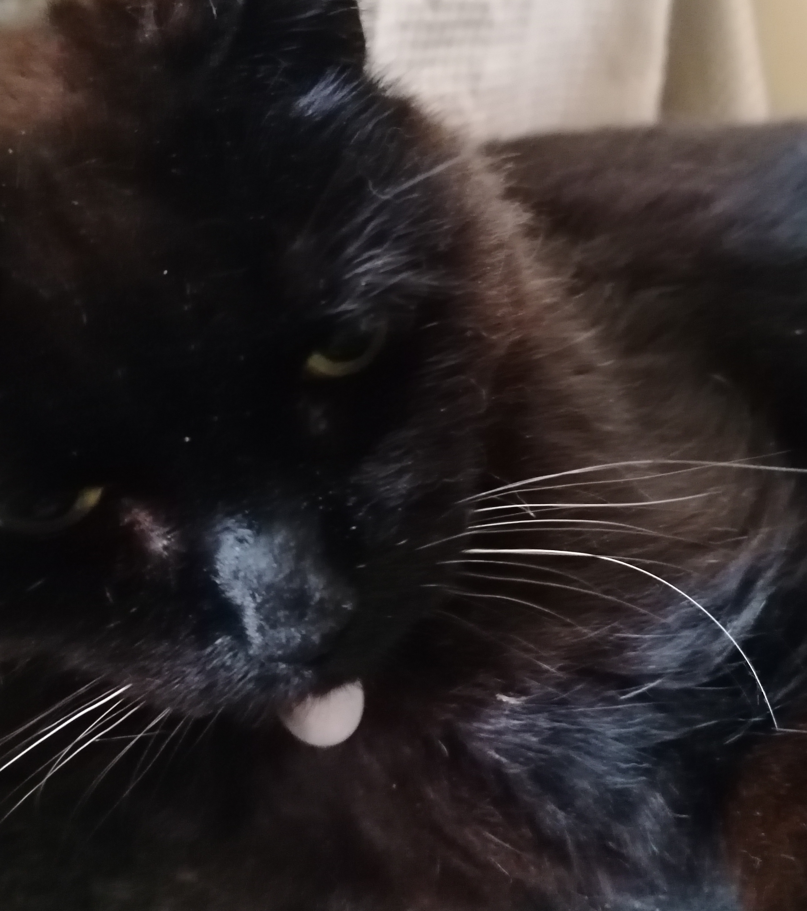
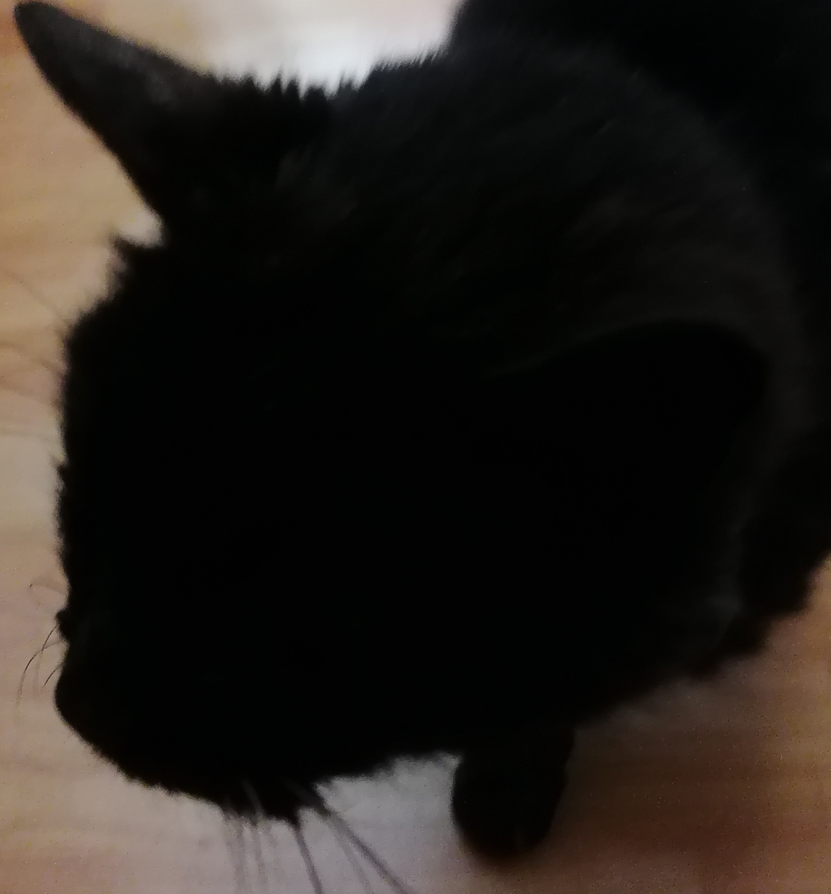

Introduction
Here are my cats, Tig and Fluffson, hugging!

Fluffson

This is Fluffson. At the time of making this website, he is 16 years old. He loves eating and is very fat and social. His mum's name was Princess Flufferkins, and therefore he is King Fluffson I of fluffiness.
Tig

This is Tig. He is currently, in July 2026, 19 years old. His hobbies are: pooing on the floor, staring at said floor, and I am convinced his only sense is of movement. He only forms a few thoughts a day.
Unfortunately, Tig died in July 2026
Links
My Web AccountPage Info
Created by WebDesignerCameron